هنّأت طالبان" The Taliban has celebrated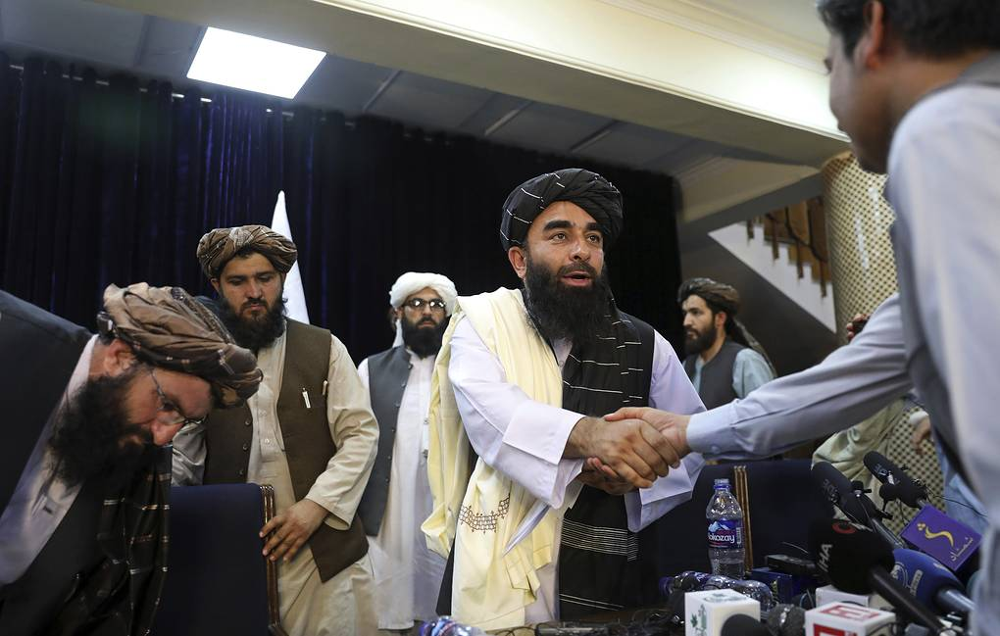 و قال and he said
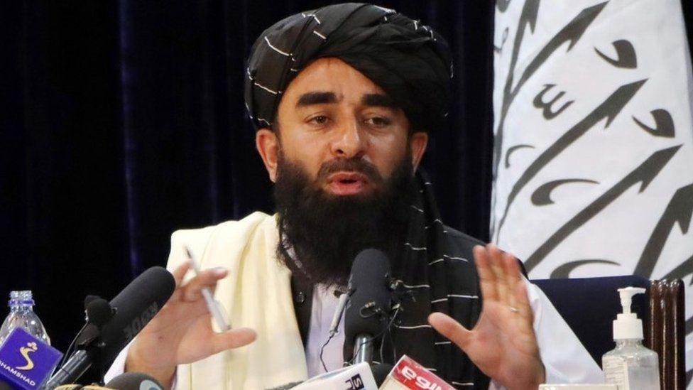النصر "victory" 
هنّأت طالبان بالنصر" The Taliban has celebrated the victory
and Washington saidو قال واشنطون 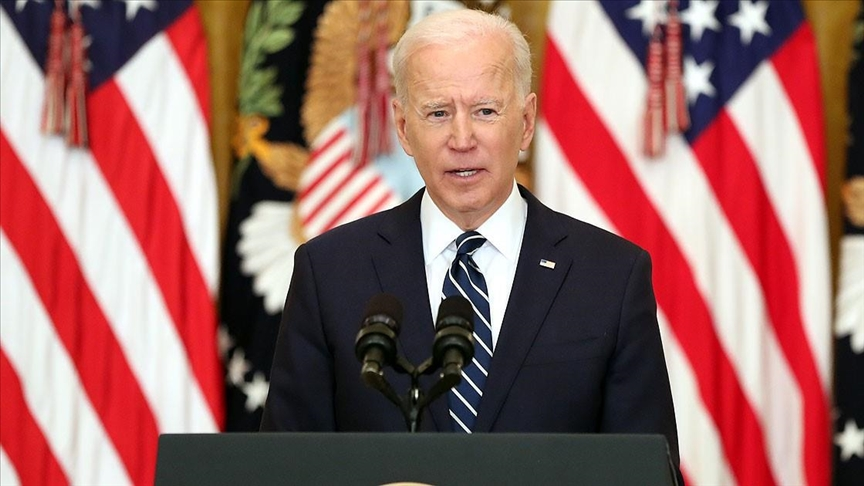 that it will be in Qatar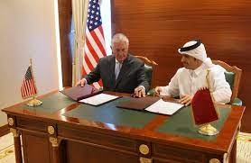
ففي تصريحات and in statements قال المتحدث باسم طالبان ذبيح الله مجاهد
the representative of Taliban Zabihullah Mujahid, said "
"نهنئ أفغانستان" "we are congratulating Afghanistan"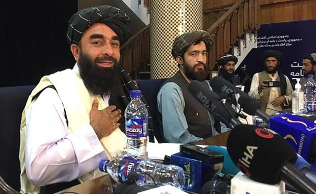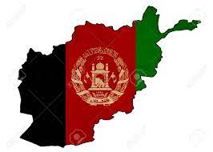
انهFor sure this is النصر "victory" for us
for us هنّأت طالبان بالنصر" The Taliban has celebrated the victory
و قالت انها تريد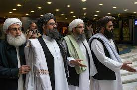
and Washington saidو قال واشنطون that it will be in Qatar
ففي تصريحات and in statements قال المتحدث باسم طالبان ذبيح الله مجاهد
"و "قال "نهنئ and he said "congratulations"
انهFor sure this is النصر "victory" for us 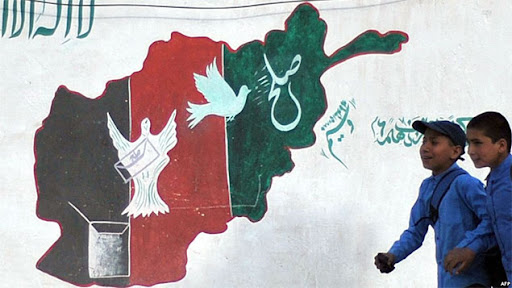
for us 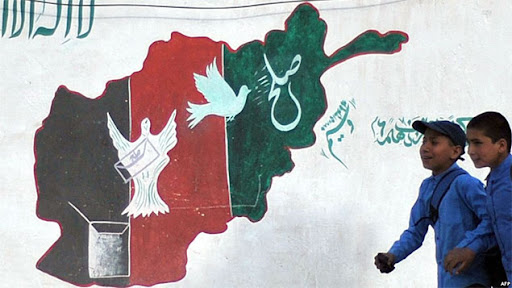 هنّأت طالبان بالنصر" The Taliban has celebrated the victory
و قالت انها تريدعلاقات جدية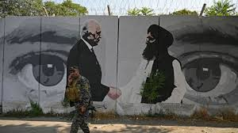
and Washington saidو في حِينٍ قال واشنطون that it will use its existence and power in Qatar
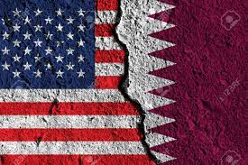
And in statements leading to it that on Tuesday ففي تصريحات أدلى بها اليوم الثلاثاء
قال المتحدث باسم طالبان ذبيح الله مجاهد
و قال "نهنئ أفغانستان" and he said "congratulations"
انهFor sure this is النصر "victory" for us
for us
هنّأت طالبان بالنصر" The Taliban has celebrated the victory
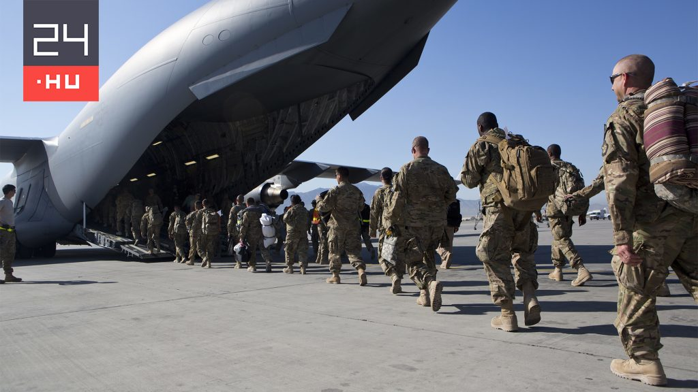بعد انسحاب آخر جندي أميركي after the withdrawal of the last american soldier
و قالت انها تريدعلاقات جديةمع الولايات المتحدة
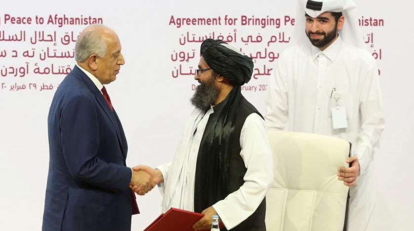
and Washington saidو في حِينٍ قال واشنطون
واشنطن إنها ستستخدم وجودها ومقدراتها في قطر لإدارة دبلوماسيتها في أفغانستان للمرحلة القادمة
Washington said that it will use its existence and power in Qatar
for administering diplomatic relationships in Afghanistan for the next period.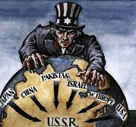
And in statements leading to it that on Tuesday ففي تصريحات أدلى بها اليوم الثلاثاء
from the apron of the Kabul airport after hours of control
by the militants of the movement over the military zone of the airport قال المتحدث باسم طالبان ذبيح الله مجاهد
و قال "نهنئ أفغانستان" and he said "congratulations"
انهFor sure this is النصر "victory" for us all
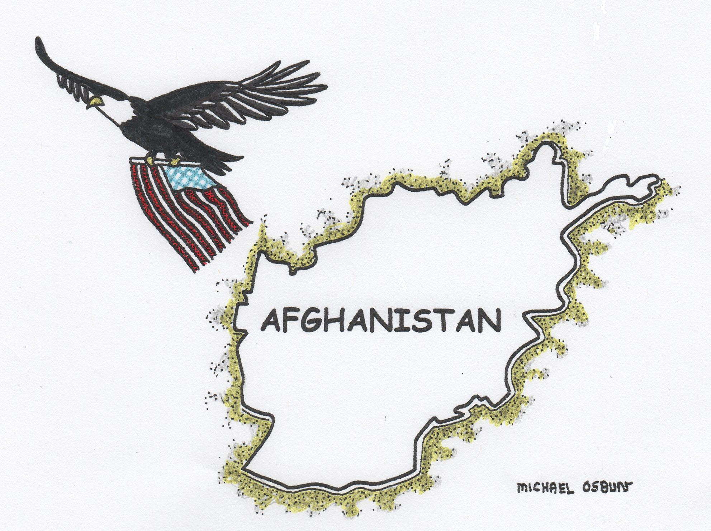
قال المتحدث باسم طالبان ذبيح الله مجاهد
و قال "نهنئ أفغانستان" and he said "congratulations"
انهFor sure this is النصر "victory" for us all
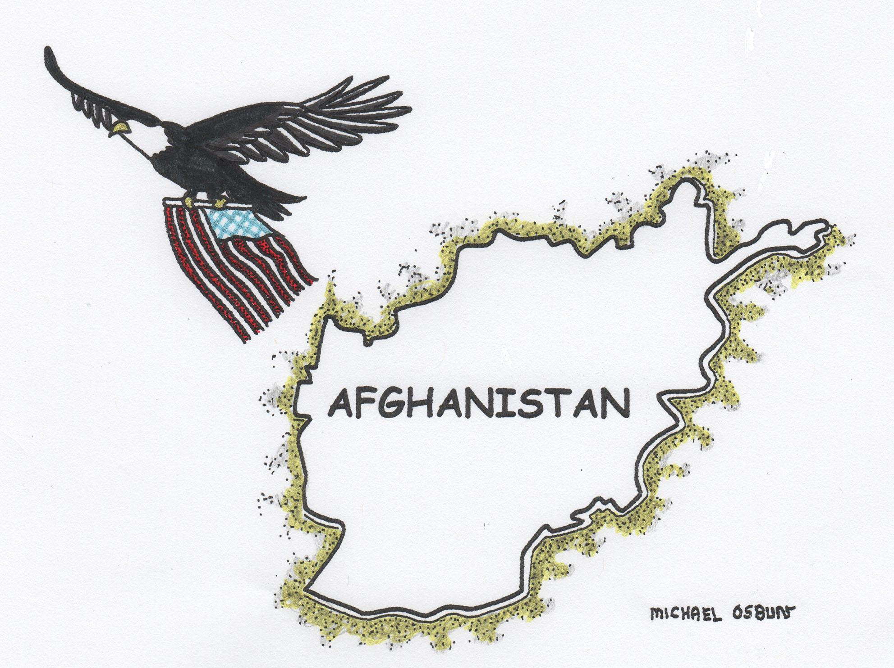
❮
❯
for us all
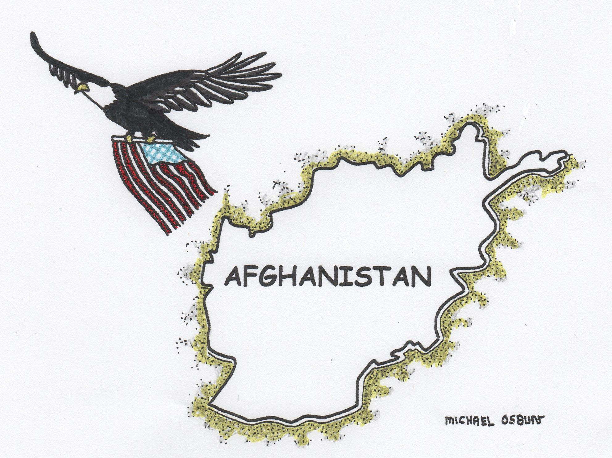